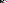

<!doctype html>
<meta charset="utf-8">
<title>Maven brand proof</title>
<style>
  body { margin:0; font:13px/1.5 ui-monospace,SFMono-Regular,Menlo,monospace; background:#f4f4f4; color:#111 }
  h2 { font:600 12px/1 ui-monospace,monospace; letter-spacing:.12em; text-transform:uppercase;
       margin:0 0 12px; color:#666 }
  section { padding:28px 32px; border-bottom:1px solid #ddd; background:#fff }
  section.dark { background:#0A0A0A; color:#fff }
  section.dark h2 { color:#888 }
  .overlay { position:relative; width:872px; height:651px; background:#fff }
  .overlay img { position:absolute; inset:0; width:100%; height:100% }
  /* source bbox measured at (373,395)-(1070.6,660) in a 1452x1083 jpeg */
  .overlay svg { position:absolute; left:25.69%; top:36.47%; width:48.07%; height:24.47%;
                 color:#E30161; opacity:.55; mix-blend-mode:multiply }
  .sizes { display:flex; align-items:flex-end; gap:36px; flex-wrap:wrap }
  .sizes figure { margin:0; text-align:center }
  .sizes figcaption { margin-top:10px; color:#888; font-size:11px }
  .fav { display:flex; gap:24px; align-items:flex-end }
  .fav img { image-rendering:pixelated; border:1px solid #ddd }
</style>

<section>
  <h2>1 — Rebuilt vector (magenta, 55%) over the client bitmap</h2>
  <div class="overlay">
    
    <svg xmlns="http://www.w3.org/2000/svg" viewBox="0 0 7.84375 3">
      <path fill="currentColor" d="M0 0L1.4375 0L2.4219 1.7227L3.4063 0L4.8438 0L4.8438 1L3.9598 1L2.817 3L2.0268 3L1 1.2031L1 3L0 3ZM3.8438 2L4.8438 2L4.8438 3L3.8438 3Z"/>
      <rect fill="currentColor" x="5.8438" y="0" width="1" height="1"/>
      <rect fill="currentColor" x="6.8438" y="1" width="1" height="1"/>
      <rect fill="currentColor" x="5.8438" y="2" width="1" height="1"/>
    </svg>
  </div>
</section>

<section>
  <h2>2 — Primary lockup, light ground</h2>
  <div class="sizes">
    <figure><figcaption>96 px</figcaption></figure>
    <figure><figcaption>48 px</figcaption></figure>
    <figure><figcaption>28 px — header</figcaption></figure>
    <figure><figcaption>16 px</figcaption></figure>
    <figure><figcaption>wordmark</figcaption></figure>
    <figure><figcaption>mono</figcaption></figure>
  </div>
</section>

<section class="dark">
  <h2>3 — Inverse behaviour on ink ground (currentColor)</h2>
  <!-- inlined on purpose: currentColor only inherits when the SVG is in the DOM,
       which is exactly how the site's <Logo> component will ship it -->
  <div class="sizes" style="color:#fff">
    <figure>
      <svg viewBox="0 0 7.84375 3" style="height:96px" xmlns="http://www.w3.org/2000/svg">
        <path fill="currentColor" d="M0 0L1.4375 0L2.4219 1.7227L3.4063 0L4.8438 0L4.8438 1L3.9598 1L2.817 3L2.0268 3L1 1.2031L1 3L0 3ZM3.8438 2L4.8438 2L4.8438 3L3.8438 3Z"/>
        <rect fill="#0081D2" x="5.8438" y="0" width="1" height="1"/>
        <rect fill="#E30161" x="6.8438" y="1" width="1" height="1"/>
        <rect fill="#FFE305" x="5.8438" y="2" width="1" height="1"/>
      </svg><figcaption>96 px</figcaption>
    </figure>
    <figure>
      <svg viewBox="0 0 7.84375 3" style="height:28px" xmlns="http://www.w3.org/2000/svg">
        <path fill="currentColor" d="M0 0L1.4375 0L2.4219 1.7227L3.4063 0L4.8438 0L4.8438 1L3.9598 1L2.817 3L2.0268 3L1 1.2031L1 3L0 3ZM3.8438 2L4.8438 2L4.8438 3L3.8438 3Z"/>
        <rect fill="#0081D2" x="5.8438" y="0" width="1" height="1"/>
        <rect fill="#E30161" x="6.8438" y="1" width="1" height="1"/>
        <rect fill="#FFE305" x="5.8438" y="2" width="1" height="1"/>
      </svg><figcaption>28 px — header</figcaption>
    </figure>
    <figure><figcaption>badge / avatar</figcaption></figure>
  </div>
</section>

<section>
  <h2>4 — Favicon at real tab sizes</h2>
  <div class="fav">
    <figure style="margin:0"><figcaption>128</figcaption></figure>
    <figure style="margin:0"><figcaption>64</figcaption></figure>
    <figure style="margin:0"><figcaption>32</figcaption></figure>
    <figure style="margin:0"><figcaption>16 — real tab size</figcaption></figure>
  </div>
</section>
